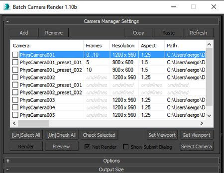

This is long-awaited version of the script supporting multiple presets per camera. Now you can select camera preset and press Add button. New preset will be added with the same camera. New presets are named as follows: camera_name_preset_001. Names cannot be changed and numbers are changing if presets are deleted, e.g. if you add two presets and then remove first one the one that stays will have 001 at the end.
Other thing to consider is that additional presets are tied to camera, so if you delete the camera all its presets will be gone. If you clone the camera that clonned camera will have additional presets as well.
New keyword was added to support new preset names - %preset_name%. You can use it instead of %camera_name% which gives you the same camera name for each additional preset. %preset_name% keyword will be replaced with current preset name if you use it as a file name for example.
This is early version of the script, I didn't test it thoroughly, so use it on your own risk :) It should work I believe.
Download
Download it here - batchcamerarender_1.10b.ms
This site is still under develepment so, please, go ahead and comment on ScriptSpot.com. Some more +-s on Scriptspot are much appreciated!